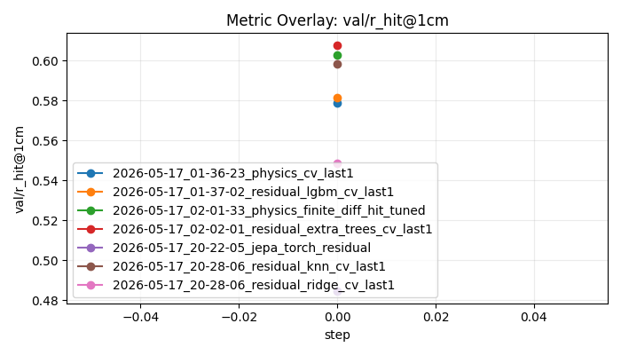

Portable package
Metric: val/r_hit@1cm, mode: max
TODO: Add human-authored findings based on the generated evidence.
| rank | run_id | run_name | metric_value | best_step | warning_count | error_count |
|---|---|---|---|---|---|---|
| 1 | 2026-05-17_02-02-01_residual_extra_trees_cv_last1 | residual_extra_trees_cv_last1 | 0.6075 | 0 | 0 | 0 |
| 2 | 2026-05-17_02-01-33_physics_finite_diff_hit_tuned | physics_finite_diff_hit_tuned | 0.6026 | 0 | 0 | 0 |
| 3 | 2026-05-17_20-28-06_residual_knn_cv_last1 | residual_knn_cv_last1 | 0.5984 | 0 | 0 | 0 |
| 4 | 2026-05-17_01-37-02_residual_lgbm_cv_last1 | residual_lgbm_cv_last1 | 0.5814 | 0 | 0 | 0 |
| 5 | 2026-05-17_01-36-23_physics_cv_last1 | physics_cv_last1 | 0.5787 | 0 | 0 | 0 |
| 6 | 2026-05-17_20-28-06_residual_ridge_cv_last1 | residual_ridge_cv_last1 | 0.5486 | 0 | 0 | 0 |
| 7 | 2026-05-17_20-22-05_jepa_torch_residual | jepa_torch_residual | 0.4847 | 0 | 0 | 0 |
| group_key | count | mean | std | median | best | best_run_id |
|---|---|---|---|---|---|---|
| {"__config_dir__": "/mnt/f/NowWorking/SkillLogDashboard/alpha-test-project/mosquito/configs", "cv.n_splits": 5, "experiment.name": "jepa_torch_residual", "experiment.seed": 20260517, "experiment.tags": "[\"jepa\", \"torch\", \"residual\"]", "model.base_method": "cv_last1", "model.params.batch_size": 256, "model.params.epochs": 100, "model.params.hidden": 96, "model.params.lr": 0.001, "model.params.mask_prob": 0.35, "model.params.pretrain_epochs": 35, "model.params.weight_decay": 0.0001, "model.type": "jepa_torch", "paths.data_root": "data", "paths.results_root": "results", "runtime_args.config": "alpha-test-project/mosquito/configs/jepa_torch.yaml", "runtime_args.limit_test": null, "runtime_args.limit_train": null, "runtime_args.make_submission": false, "runtime_args.refresh_cache": false, "submission.threshold": 0.7} | 1 | 0.4847 | 0.0 | 0.4847 | 0.4847 | 2026-05-17_20-22-05_jepa_torch_residual |
| {"__config_dir__": "/mnt/f/NowWorking/SkillLogDashboard/alpha-test-project/mosquito/configs", "cv.n_splits": 5, "experiment.name": "physics_cv_last1", "experiment.seed": 20260517, "experiment.tags": "[\"physics\", \"baseline\"]", "model.method": "cv_last1", "model.type": "physics", "paths.data_root": "data", "paths.results_root": "results", "runtime_args.config": "alpha-test-project/mosquito/configs/physics.yaml", "runtime_args.limit_test": null, "runtime_args.limit_train": null, "runtime_args.make_submission": false, "runtime_args.refresh_cache": false, "submission.threshold": 0.7} | 1 | 0.5787 | 0.0 | 0.5787 | 0.5787 | 2026-05-17_01-36-23_physics_cv_last1 |
| {"__config_dir__": "/mnt/f/NowWorking/SkillLogDashboard/alpha-test-project/mosquito/configs", "cv.n_splits": 5, "experiment.name": "physics_finite_diff_hit_tuned", "experiment.seed": 20260517, "experiment.tags": "[\"physics\", \"finite-difference\", \"hit-tuned\"]", "model.method": "finite_diff", "model.params.coefficients": "[2.4906, -0.4332, -0.0291, -0.0548, 0.017]", "model.type": "physics", "paths.data_root": "data", "paths.results_root": "results", "runtime_args.config": "alpha-test-project/mosquito/configs/physics_finite_diff.yaml", "runtime_args.limit_test": null, "runtime_args.limit_train": null, "runtime_args.make_submission": false, "runtime_args.refresh_cache": false, "submission.threshold": 0.7} | 1 | 0.6026 | 0.0 | 0.6026 | 0.6026 | 2026-05-17_02-01-33_physics_finite_diff_hit_tuned |
| {"__config_dir__": "/mnt/f/NowWorking/SkillLogDashboard/alpha-test-project/mosquito/configs", "cv.n_splits": 5, "experiment.name": "residual_extra_trees_cv_last1", "experiment.seed": 20260517, "experiment.tags": "[\"residual\", \"extra-trees\", \"candidate\"]", "model.base_method": "cv_last1", "model.model_kind": "extra_trees", "model.params.max_features": 0.5, "model.params.min_samples_leaf": 3, "model.params.n_estimators": 600, "model.type": "residual", "paths.data_root": "data", "paths.results_root": "results", "runtime_args.config": "alpha-test-project/mosquito/configs/residual_extra_trees.yaml", "runtime_args.limit_test": null, "runtime_args.limit_train": null, "runtime_args.make_submission": false, "runtime_args.refresh_cache": false, "submission.threshold": 0.7} | 1 | 0.6075 | 0.0 | 0.6075 | 0.6075 | 2026-05-17_02-02-01_residual_extra_trees_cv_last1 |
| {"__config_dir__": "/mnt/f/NowWorking/SkillLogDashboard/alpha-test-project/mosquito/configs", "cv.n_splits": 5, "experiment.name": "residual_knn_cv_last1", "experiment.seed": 20260517, "experiment.tags": "[\"residual\", \"knn\", \"non-tree\"]", "model.base_method": "cv_last1", "model.model_kind": "knn", "model.params.n_neighbors": 80, "model.params.p": 2, "model.params.weights": "distance", "model.type": "residual", "paths.data_root": "data", "paths.results_root": "results", "runtime_args.config": "alpha-test-project/mosquito/configs/residual_knn.yaml", "runtime_args.limit_test": null, "runtime_args.limit_train": null, "runtime_args.make_submission": false, "runtime_args.refresh_cache": false, "submission.threshold": 0.7} | 1 | 0.5984 | 0.0 | 0.5984 | 0.5984 | 2026-05-17_20-28-06_residual_knn_cv_last1 |
| {"__config_dir__": "/mnt/f/NowWorking/SkillLogDashboard/alpha-test-project/mosquito/configs", "cv.n_splits": 5, "experiment.name": "residual_lgbm_cv_last1", "experiment.seed": 20260517, "experiment.tags": "[\"residual\", \"lightgbm\", \"candidate\"]", "model.base_method": "cv_last1", "model.model_kind": "lightgbm", "model.params.colsample_bytree": 0.92, "model.params.learning_rate": 0.018, "model.params.n_estimators": 1400, "model.params.num_leaves": 31, "model.params.reg_lambda": 0.35, "model.params.subsample": 0.92, "model.type": "residual_lgbm", "paths.data_root": "data", "paths.results_root": "results", "runtime_args.config": "alpha-test-project/mosquito/configs/residual_lgbm.yaml", "runtime_args.limit_test": null, "runtime_args.limit_train": null, "runtime_args.make_submission": false, "runtime_args.refresh_cache": false, "submission.threshold": 0.7} | 1 | 0.5814 | 0.0 | 0.5814 | 0.5814 | 2026-05-17_01-37-02_residual_lgbm_cv_last1 |
| {"__config_dir__": "/mnt/f/NowWorking/SkillLogDashboard/alpha-test-project/mosquito/configs", "cv.n_splits": 5, "experiment.name": "residual_ridge_cv_last1", "experiment.seed": 20260517, "experiment.tags": "[\"residual\", \"ridge\", \"non-tree\"]", "model.base_method": "cv_last1", "model.model_kind": "ridge", "model.params.alpha": 0.0001, "model.type": "residual", "paths.data_root": "data", "paths.results_root": "results", "runtime_args.config": "alpha-test-project/mosquito/configs/residual_ridge.yaml", "runtime_args.limit_test": null, "runtime_args.limit_train": null, "runtime_args.make_submission": false, "runtime_args.refresh_cache": false, "submission.threshold": 0.7} | 1 | 0.5486 | 0.0 | 0.5486 | 0.5486 | 2026-05-17_20-28-06_residual_ridge_cv_last1 |
| axis | value | count | best | mean |
|---|---|---|---|---|
| __config_dir__ | /mnt/f/NowWorking/SkillLogDashboard/alpha-test-project/mosquito/configs | 7 | 0.6075 | 0.5717000000000001 |
| cv.n_splits | 5 | 7 | 0.6075 | 0.5717000000000001 |
| experiment.name | jepa_torch_residual | 1 | 0.4847 | 0.4847 |
| experiment.name | physics_cv_last1 | 1 | 0.5787 | 0.5787 |
| experiment.name | physics_finite_diff_hit_tuned | 1 | 0.6026 | 0.6026 |
| experiment.name | residual_extra_trees_cv_last1 | 1 | 0.6075 | 0.6075 |
| experiment.name | residual_knn_cv_last1 | 1 | 0.5984 | 0.5984 |
| experiment.name | residual_lgbm_cv_last1 | 1 | 0.5814 | 0.5814 |
| experiment.name | residual_ridge_cv_last1 | 1 | 0.5486 | 0.5486 |
| experiment.seed | 20260517 | 7 | 0.6075 | 0.5717000000000001 |
| experiment.tags | ["jepa", "torch", "residual"] | 1 | 0.4847 | 0.4847 |
| experiment.tags | ["physics", "baseline"] | 1 | 0.5787 | 0.5787 |
| experiment.tags | ["physics", "finite-difference", "hit-tuned"] | 1 | 0.6026 | 0.6026 |
| experiment.tags | ["residual", "extra-trees", "candidate"] | 1 | 0.6075 | 0.6075 |
| experiment.tags | ["residual", "knn", "non-tree"] | 1 | 0.5984 | 0.5984 |
| experiment.tags | ["residual", "lightgbm", "candidate"] | 1 | 0.5814 | 0.5814 |
| experiment.tags | ["residual", "ridge", "non-tree"] | 1 | 0.5486 | 0.5486 |
| model.base_method | cv_last1 | 5 | 0.6075 | 0.5641200000000001 |
| model.method | cv_last1 | 1 | 0.5787 | 0.5787 |
| model.method | finite_diff | 1 | 0.6026 | 0.6026 |
| model.model_kind | extra_trees | 1 | 0.6075 | 0.6075 |
| model.model_kind | knn | 1 | 0.5984 | 0.5984 |
| model.model_kind | lightgbm | 1 | 0.5814 | 0.5814 |
| model.model_kind | ridge | 1 | 0.5486 | 0.5486 |
| model.params.alpha | 0.0001 | 1 | 0.5486 | 0.5486 |
| model.params.batch_size | 256 | 1 | 0.4847 | 0.4847 |
| model.params.coefficients | [2.4906, -0.4332, -0.0291, -0.0548, 0.017] | 1 | 0.6026 | 0.6026 |
| model.params.colsample_bytree | 0.92 | 1 | 0.5814 | 0.5814 |
| model.params.epochs | 100 | 1 | 0.4847 | 0.4847 |
| model.params.hidden | 96 | 1 | 0.4847 | 0.4847 |
| model.params.learning_rate | 0.018 | 1 | 0.5814 | 0.5814 |
| model.params.lr | 0.001 | 1 | 0.4847 | 0.4847 |
| model.params.mask_prob | 0.35 | 1 | 0.4847 | 0.4847 |
| model.params.max_features | 0.5 | 1 | 0.6075 | 0.6075 |
| model.params.min_samples_leaf | 3 | 1 | 0.6075 | 0.6075 |
| model.params.n_estimators | 1400 | 1 | 0.5814 | 0.5814 |
| model.params.n_estimators | 600 | 1 | 0.6075 | 0.6075 |
| model.params.n_neighbors | 80 | 1 | 0.5984 | 0.5984 |
| model.params.num_leaves | 31 | 1 | 0.5814 | 0.5814 |
| model.params.p | 2 | 1 | 0.5984 | 0.5984 |
| model.params.pretrain_epochs | 35 | 1 | 0.4847 | 0.4847 |
| model.params.reg_lambda | 0.35 | 1 | 0.5814 | 0.5814 |
| model.params.subsample | 0.92 | 1 | 0.5814 | 0.5814 |
| model.params.weight_decay | 0.0001 | 1 | 0.4847 | 0.4847 |
| model.params.weights | distance | 1 | 0.5984 | 0.5984 |
| model.type | jepa_torch | 1 | 0.4847 | 0.4847 |
| model.type | physics | 2 | 0.6026 | 0.59065 |
| model.type | residual | 3 | 0.6075 | 0.5848333333333334 |
| model.type | residual_lgbm | 1 | 0.5814 | 0.5814 |
| paths.data_root | data | 7 | 0.6075 | 0.5717000000000001 |
| paths.results_root | results | 7 | 0.6075 | 0.5717000000000001 |
| runtime_args.config | alpha-test-project/mosquito/configs/jepa_torch.yaml | 1 | 0.4847 | 0.4847 |
| runtime_args.config | alpha-test-project/mosquito/configs/physics.yaml | 1 | 0.5787 | 0.5787 |
| runtime_args.config | alpha-test-project/mosquito/configs/physics_finite_diff.yaml | 1 | 0.6026 | 0.6026 |
| runtime_args.config | alpha-test-project/mosquito/configs/residual_extra_trees.yaml | 1 | 0.6075 | 0.6075 |
| runtime_args.config | alpha-test-project/mosquito/configs/residual_knn.yaml | 1 | 0.5984 | 0.5984 |
| runtime_args.config | alpha-test-project/mosquito/configs/residual_lgbm.yaml | 1 | 0.5814 | 0.5814 |
| runtime_args.config | alpha-test-project/mosquito/configs/residual_ridge.yaml | 1 | 0.5486 | 0.5486 |
| runtime_args.limit_test | None | 7 | 0.6075 | 0.5717000000000001 |
| runtime_args.limit_train | None | 7 | 0.6075 | 0.5717000000000001 |
| runtime_args.make_submission | False | 7 | 0.6075 | 0.5717000000000001 |
| runtime_args.refresh_cache | False | 7 | 0.6075 | 0.5717000000000001 |
| submission.threshold | 0.7 | 7 | 0.6075 | 0.5717000000000001 |
| rule_id | outcome | severity | message | run_id |
|---|

See report_manifest.yaml.